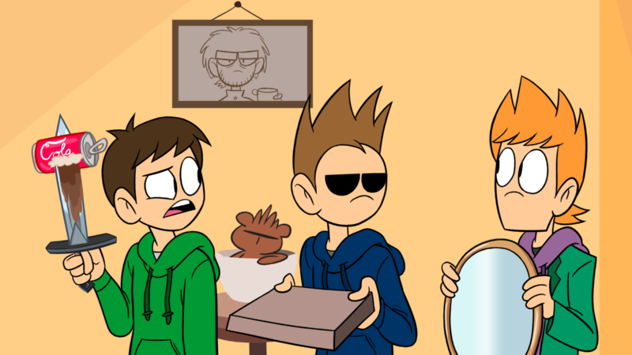
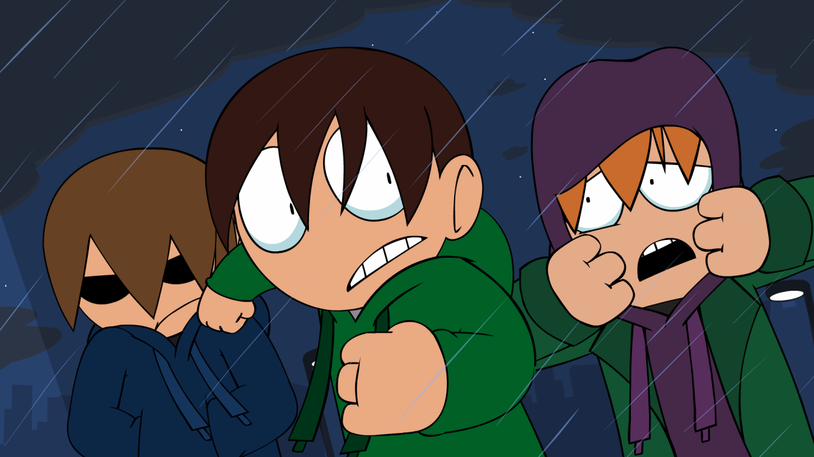
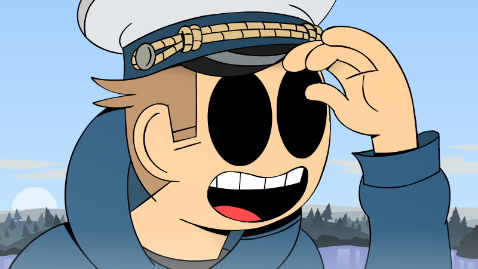

Hey Eddheads! Animation takes time so here’s a few screenshots from our upcoming eddisodes to tide you over until ‘Mirror Mirror’ comes out!
- Mirror Mirror by Sandra Rivas (early 2015)
- Saloonatics by Anthony 'Kreid’ Price (mid 2015)
- The End (Part 1) by Paul ter Voorde (late 2015)